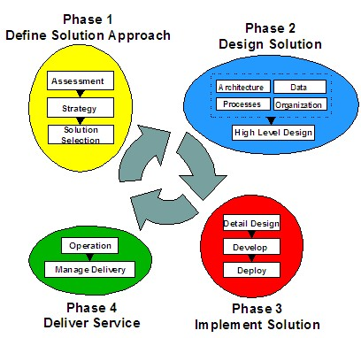
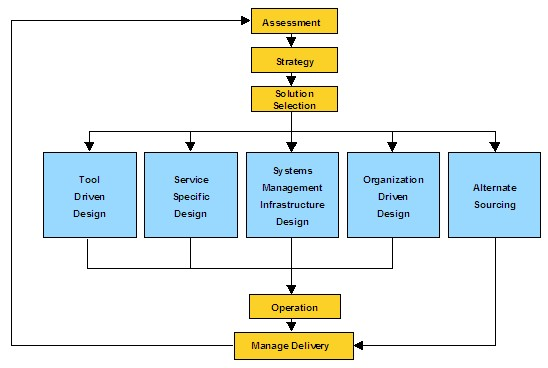

| Example: Recommended IT Management Solution Path Life Cycle |
|
 |
| The notion of solution paths introduced in the Systems Management Solution Life Cycle, is shown below. |
|
Relationships
Main Description
Systems Management Solution Life Cycle
Within this life cycle framework, a solution path is a combination and sequencing the design and implementation activities
in Phases 2 and 3 of the life cycle.

The Systems Management Solution Life Cycle has identified five common solution paths. These are shown below:

The Recommended IT Management Solution Path will identify the characteristics of the chosen solution path, the primary
driver for the path, and describing the high level sequencing or interaction of solution elements.
Common Solution Paths
Tool-driven Design
-
The new tool (or tool set) is the primary driver for the design effort.
-
Current processes will need to be redesigned or new ones created that complement the tool.
-
Procedures will be developed that are based on the chosen tool and its capabilities.
-
Roles and responsibilities will be realigned with those assumed by the tool.
Service-specific Design
-
The focus processes or services will be redesigned and re-engineered to meet the specific requirements of the
situation.
-
The resulting process design provides the requirements and design constraints for the tool selection and
implementation.
-
The process or service flow also drives redefinition of roles and responsibilities within the organization.
Systems Management Infrastructure Design
-
As the application and its associated platforms are new, you need required to develop new processes, define new
roles, and implement new tools in order to manage that new system.
-
You redesign multiple processes and roles, and combine one or more tools to produce an integrated high level
design, which encompasses the entire new environment.
Organization-driven Design
-
The changes in organization may require adjustments to the definition of roles and correspondingly different mixes
of skills.
-
Process and service flows will be developed around the new understanding of roles and
responsibilities.
-
Tools will be chosen and customized based on their ability to support these new roles and service flows.
Alternative Sourcing
-
Some or all of your IT management responsibilities are outsourced to an external service provider.
-
Divisions of responsibility and process interfaces are defined.
-
You manage the external service provider via their contract and committed service levels.
-
Internal systems management processes and responsibilities are realigned to fit that part of the environment
that remains in-house.
|
© Copyright IBM Corp. 1987, 2012 All Rights Reserved
Property of IBM
These materials are intended only for use as part of an IBM engagement |
|